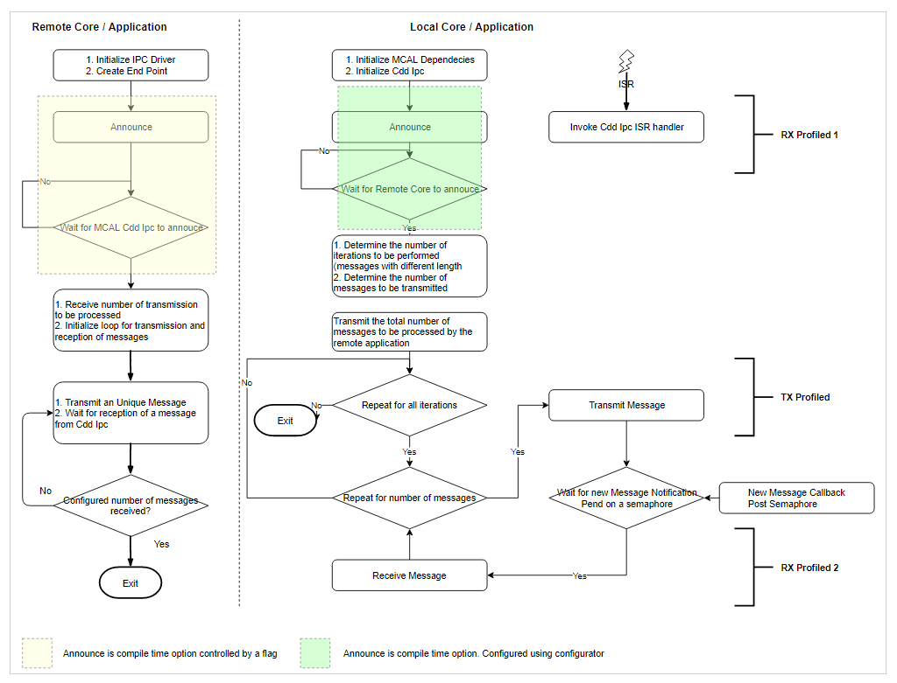

Introduction
This application measures the CPU cycles required for transmission, reception of N number of bytes to, from a given core. As an example communication between MCU 1 0 and MPU 1 0 will be considered (or other cores). Similar approach would be employed for other cores. Please refer (Supported Drivers) for details on core that can host MCAL
Simulates transmission and reception of messages of different length, including standard lengths of 8 bytes and 64 bytes.
| SoC | Host Core | Remote Cores | Comments |
| DRA80X | MCU 1 0 | MPU 1 0 | None |
| J721E | MCU 1 0 | MCU 2 1, MPU 1 0 | MCAL could be hosted on other cores but this demo application runs only on MCU 1 0, at this point of time |
Dependencies
Local Application
This application depends on multiple components and are detailed in sections below
- TI RTOS : Uses Task, semaphore, Interrupt Handling HWI and Profiling Utility.
- MCAL
- MCAL BSW Stubs Stubs at (SDK Install Directory)/mcusw_xx.yy.xx.bb/mcuss_demos/Bsw_Stubs are used.
- MCAL Configurations Cdd Ipc Configurations at (SDK Install Directory)/mcusw_xx.yy.xx.bb/mcuss_demos/mcal_config are used.
- The MCAL based profiling application is hosted on MCU 1 0 (could also be hosted on other cores in future, (Supported Drivers))
Remote Application
This application depends on multiple components and are detailed in sections below
- TI RTOS : Uses Task, semaphore, Interrupt Handling HWI and Swi.
- PDK
Back To Top
Flow Chart
The flow chart below depicts the profiling application
- ipc_remote_app_mpu1_0_release.xa53fg would be hosted on Remote Core (MPU 1 0)
- cdd_ipc_profile_app_mcu1_0_release.xer5f would be hosted on Local Core (MCU 1 0)

Cdd Ipc Profiling Application
Back To Top
Measured Performance
| SoC Family | Avg K cycles per message | Message Size | Comments | From | To |
| DRA80X | 9.94448 | 4 b Tx | None | MCU 10 | MPU 10 |
| 9.72362 | 8 b Tx | None | MCU 10 | MPU 10 |
| 10.235348 | 64 b Tx | None | MCU 10 | MPU 10 |
| 5.994592 | 11 b Rx | None | MCU 10 | MPU 10 |
| 5.728292 | 12 b Rx | None | MCU 10 | MPU 10 |
| J721E | 6.20626 | 4 b Tx | None | MCU 10 | MCU 21 |
| 6.25504 | 8 b Tx | None | MCU 10 | MCU 21 |
| 7.10933 | 64 b Tx | None | MCU 10 | MCU 21 |
| 12.55570 | 11 b Rx | None | MCU 10 | MCU 21 |
| 11.96687 | 12 b Rx | None | MCU 10 | MCU 21 |
| J721E | 14.17213 | 4 b Tx | None | MCU 10 | MPU 10 |
| 14.9608 | 8 b Tx | None | MCU 10 | MPU 10 |
| 17.1622 | 64 b Tx | None | MCU 10 | MPU 10 |
| 10.63771 | 11 b Rx | None | MCU 10 | MPU 10 |
| 9.91117 | 12 b Rx | None | MCU 10 | MPU 10 |
Back To Top
Compile Time Configurations
- CDD_IPC_DEV_ERROR_DETECT Control checks of configurations and parameters. Turned OFF for profiling test
Back To Top
Test Setup / Configurations used
EVM
- Require the EVM only, as the IPC relies on built-in mailbox hardware.
Back To Top
Steps to run
- Build the demo application as detailed in Common Steps in User Guide, Specific Steps in
- Steps to run is detailed in Common Steps in User Guide, Specific Steps in
Back To Top
DRA80X Sample Profiling output
IPC Profile App:
IPC Profile App: IPC Profile Application - STARTS !!!
IPC Profile App: CDD IPC MCAL Version Info
IPC Profile App: ---------------------
IPC Profile App: Vendor ID : 44
IPC Profile App: Module ID : 255
IPC Profile App: SW Major Version : 1
IPC Profile App: SW Minor Version : 0
IPC Profile App: SW Patch Version : 0
IPC Profile App:
IPC Profile App: Starting Profiling for MPU 1 0
IPC Profile App:
IPC Profile App: Transmitted Message of size 4 bytes, 100000 times in 2486120 usecs
IPC Profile App: Average of 24.86120 usecs per message
IPC Profile App: Received Message of size 11 bytes, 100000 times in 1498648 usecs
IPC Profile App: Average of 14.98648 usecs per message
IPC Profile App: Measured Load: Total CPU: 100%, HWI: 0%, SWI:0% TSK: 0%
IPC Profile App:
IPC Profile App: Transmitted Message of size 8 bytes, 100000 times in 2430905 usecs
IPC Profile App: Average of 24.30905 usecs per message
IPC Profile App: Received Message of size 12 bytes, 100000 times in 1432073 usecs
IPC Profile App: Average of 14.32073 usecs per message
IPC Profile App: Measured Load: Total CPU: 100%, HWI: 0%, SWI:0% TSK: 0%
IPC Profile App:
IPC Profile App: Transmitted Message of size 64 bytes, 100000 times in 2558837 usecs
IPC Profile App: Average of 25.58837 usecs per message
IPC Profile App: Received Message of size 12 bytes, 100000 times in 1450571 usecs
IPC Profile App: Average of 14.50571 usecs per message
IPC Profile App: Measured Load: Total CPU: 100%, HWI: 0%, SWI:0% TSK: 0%
IPC Profile App:
IPC Profile App:
IPC Profile App: 8192 bytes used for stack
IPC Profile App:
IPC Profile App: Profiling completes!!!
Back To Top
J721E Sample Profiling output
IPC Profile App: IPC Profile Application - STARTS !!!
IPC Profile App: CDD IPC MCAL Version Info
IPC Profile App: ---------------------
IPC Profile App: Vendor ID : 44
IPC Profile App: Module ID : 255
IPC Profile App: SW Major Version : 1
IPC Profile App: SW Minor Version : 0
IPC Profile App: SW Patch Version : 0
IPC Profile App: Received ti.ipc4.ping-pong as ctrl MSG from MPU 1 0
IPC Profile App:
IPC Profile App: Starting Profiling for MPU 1 0
IPC Profile App:
IPC Profile App: Transmitted Message of size 4 bytes, 100000 times in 1605213 usecs
IPC Profile App: Average of 16.5213 usecs per message
IPC Profile App: Received Message of size 11 bytes, 100000 times in 987331 usecs
IPC Profile App: Average of 9.87331 usecs per message
IPC Profile App: Measured Load: Total CPU: 69.275772%, HWI: 37.220684%, SWI:0.040209% TSK: 32.011635%
IPC Profile App:
IPC Profile App: Transmitted Message of size 8 bytes, 100000 times in 1546783 usecs
IPC Profile App: Average of 15.46783 usecs per message
IPC Profile App: Received Message of size 12 bytes, 100000 times in 926608 usecs
IPC Profile App: Average of 9.26608 usecs per message
IPC Profile App: Measured Load: Total CPU: 80.549522%, HWI: 42.129684%, SWI:0.046039% TSK: 38.377823%
IPC Profile App:
IPC Profile App: Transmitted Message of size 64 bytes, 100000 times in 1686637 usecs
IPC Profile App: Average of 16.86637 usecs per message
IPC Profile App: Received Message of size 12 bytes, 100000 times in 928955 usecs
IPC Profile App: Average of 9.28955 usecs per message
IPC Profile App: Measured Load: Total CPU: 100.000000%, HWI: 0.000000%, SWI:0.000000% TSK: 0.000000%
IPC Profile App:
IPC Profile App: Received ti.ipc4.ping-pong as ctrl MSG from MCU 2 1
IPC Profile App:
IPC Profile App: Starting Profiling for MCU 2 1
IPC Profile App:
IPC Profile App: Transmitted Message of size 4 bytes, 100000 times in 768338 usecs
IPC Profile App: Average of 7.68338 usecs per message
IPC Profile App: Received Message of size 11 bytes, 100000 times in 1253474 usecs
IPC Profile App: Average of 12.53474 usecs per message
IPC Profile App: Measured Load: Total CPU: 39.341396%, HWI: 21.749819%, SWI:0.059555% TSK: 17.532038%
IPC Profile App:
IPC Profile App: Transmitted Message of size 8 bytes, 100000 times in 868664 usecs
IPC Profile App: Average of 8.68664 usecs per message
IPC Profile App: Received Message of size 12 bytes, 100000 times in 1145613 usecs
IPC Profile App: Average of 11.45613 usecs per message
IPC Profile App: Measured Load: Total CPU: 38.347424%, HWI: 20.564604%, SWI:0.059441% TSK: 17.723385%
IPC Profile App:
IPC Profile App: Transmitted Message of size 64 bytes, 100000 times in 1028407 usecs
IPC Profile App: Average of 10.28407 usecs per message
IPC Profile App: Received Message of size 12 bytes, 100000 times in 1109304 usecs
IPC Profile App: Average of 11.9304 usecs per message
IPC Profile App: Measured Load: Total CPU: 37.537415%, HWI: 19.221495%, SWI:0.059636% TSK: 18.256290%
IPC Profile App:
IPC Profile App:
IPC Profile App: 8192 bytes used for stack
IPC Profile App:
IPC Profile App: Profiling completes!!!
Back To Top
Document Revision History
| Revision | Date | Author | Description | Status |
| 0.1 | 14 Apr 2019 | Sujith S | Initial Version | Under Review |
| 0.2 | 18 Apr 2019 | Sujith S | Addressed Review comments | Approved |
| 0.3 | 16 Jul 2019 | Sujith S | Included updates based on J721E | Approved |
| 0.4 | 8 Aug 2019 | Sunil M S | Updates profile numbers for release 00.09.01 | Approved |
| 0.5 | 16 Oct 2019 | Sujith S | Updates profile numbers for release 01.00.00 | Approved |
 1.8.14
1.8.14